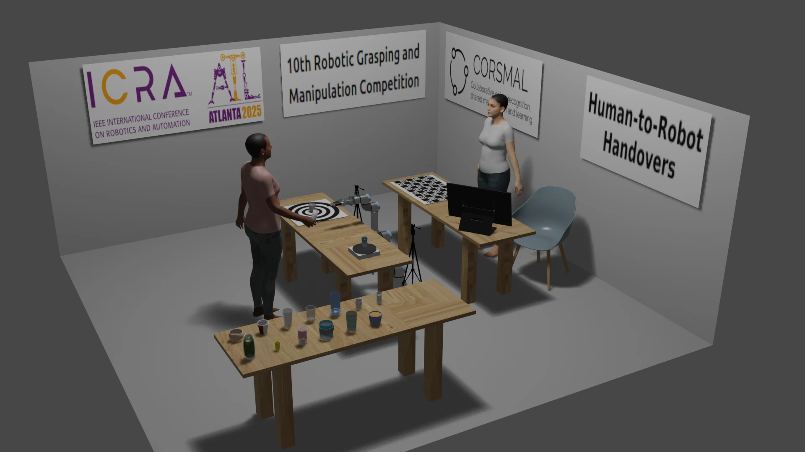

We provide details, instructions, and documentation for preparing the solution, including reference software, publications, and data.
We encourage teams to perform the handover configurations of the CORSMAL Benchmark protocol remotely in their laboratory to prepare for the on-site competition (see also the open access publication). Results will be submitted to the track organisers and teams will be ranked on the public leaderboard in this page based on the performance scores of the benchmarking protocol.
The CORSMAL Containers Manipulation dataset can be used to design perception-based solutions for the approaching phase and prior to the handover of the object to a robot.
Teams are ranked by the benchmark score.
We provide also the results grouped by vision subsystem, robotic subsystem, and completion of the overall task.
Results by individual scores
Results by cups, filling amount, grasp types, and handover locations
The setup includes a robotic arm with at least 6 degrees of freedom (e.g., UR5, KUKA) and equipped with a 2-finger parallel gripper (e.g., Robotiq 2F-85); a table where the handover is happening as well as where the robot is placed; selected containers and contents; up to two cameras (e.g., Intel RealSense D435i); and a digital scale to weigh the container. The table is covered by a white table-cloth. The two cameras should be placed at 40 cm from the robotic arm, e.g. using tripods, and oriented in such a way that they both view the centre of the table. The illustration below represents the layout in 3D of the setup within a space of 4.5 x 4.5 meters.

These instructions have been revised from the CORSMAL Human-to-Robot Handover Benchmark document.
Benchmark for human-to-robot handovers of unseen containers with unknown filling
R. Sanchez-Matilla, K. Chatzilygeroudis, K., A. Modas, N.F. Duarte, A., Xompero, A., P. Frossard, A. Billard, A. Cavallaro
IEEE Robotics and Automation Letters, 5(2), pp.1642-1649, 2020
[Open Access]
The CORSMAL benchmark for the prediction of the properties of containers
A. Xompero, S. Donaher, V. Iashin, F. Palermo, G. Solak, C. Coppola, R. Ishikawa, Y. Nagao, R. Hachiuma, Q. Liu, F. Feng, C. Lan, R. H. M. Chan, G. Christmann, J. Song, G. Neeharika, C. K. T. Reddy, D. Jain, B. U. Rehman, A. Cavallaro
IEEE Access, vol. 10, 2022.
[Open Access]
Towards safe human-to-robot handovers of unknown containers
Y. L. Pang, A. Xompero, C. Oh, A. Cavallaro
IEEE International Conference on Robot and Human Interactive Communication (RO-MAN), Virtual, 8-12 Aug 2021
[Open Access]
[code]
[webpage]
The CORSMAL Challenge contains perception solutions for the estimation of the physical properties of manipulated objects prior to a handover to a robot arm.
[challenge]
[paper 1]
[paper 2]
Additional references
[document]
Vision baseline
A vision-based algorithm, part of a larger system, proposed for localising, tracking and estimating the dimensions of a container with a stereo camera.
[paper]
[code]
[webpage]
LoDE
A method that jointly localises container-like objects and estimates their dimensions with a generative 3D sampling model and a multi-view 3D-2D iterative shape fitting, using two wide-baseline, calibrated RGB cameras.
[paper]
[code]
[webpage]
CORSMAL Containers Manipulation (1.0) [Data set]
A. Xompero, R. Sanchez-Matilla, R. Mazzon, and A. Cavallaro
Queen Mary University of London. https://doi.org/10.17636/101CORSMAL1